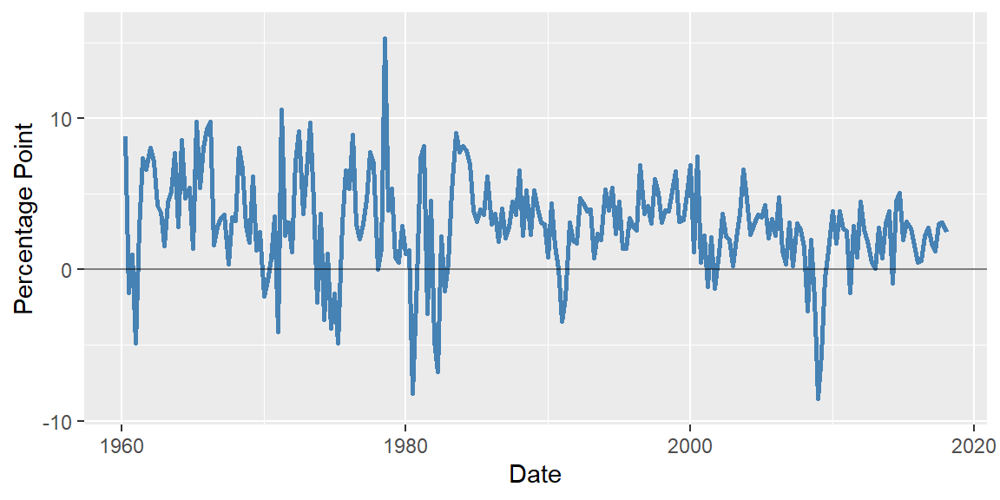
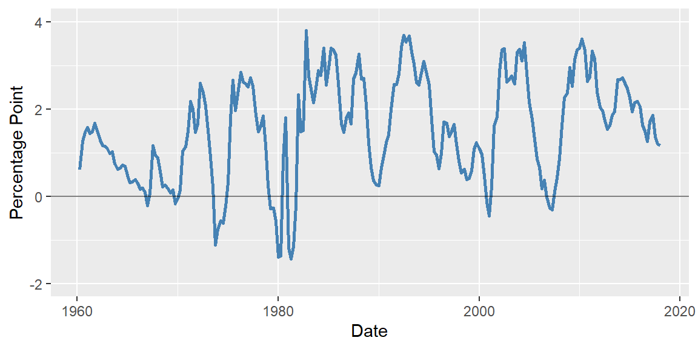

library(modelsummary)
library(tidyverse)
library(readr)
library(readxl)
library(zoo)
library(knitr)10 Economic Questions and Data
10.1 Econometrics and economic questions
The word econometrics is a neologism formed by combining the Greek words oikonomia (administration, or economics) and metron (measure) (Tintner (1953)). According to Frisch (1933), as a field, its definition is embedded in the scope of The Econometric Society, founded in 1930 for the advancement of economic theory through statistical and mathematical methods. Article 1 of the Society’s original Constitution states: “The Econometric Society is an international society for the advancement of economic theory in its relation to statistics and mathematics… Its main object shall be to promote studies that aim at a unification of the theoretical-quantitative and the empirical-quantitative approach to economic problems and that are penetrated by constructive and rigorous thinking similar to that which has come to dominate in the natural sciences. Any activity which promises ultimately to further such unification of theoretical and factual studies in economics shall be within the sphere of interest of the Society.” In line with this, Frisch (1933) defines econometrics as the unification of economic theory, statistics, and mathematics for understanding quantitative relations in an economy.
Since Frisch (1933), there have been alternative definitions of econometrics, depending on how statistics and mathematics are applied to economic data. For example, from a statistical perspective, econometrics can be defined as the science of testing economic theories or as the process of fitting mathematical equations to economic data. From a mathematical perspective, it can be defined as the application of mathematical methods for developing estimation and testing techniques for economic models. Tintner (1953) provides an early survey of alternative definitions and suggests confining econometrics to studies that utilize economic theory, statistics, and mathematics, as envisioned by Frisch (1933).
At a broader level, Stock and Watson (2020) define econometrics as “the science and art of using economic theory and statistical techniques to analyze economic data.” According to Stock and Watson (2020), irrespective of the specific definition adopted, econometrics provides a framework through which we can provide quantitative answers to economic questions. In this respect, some of the economic questions that we will address in the upcoming chapters include:
- What is the quantitative effect of a reduction in class size on test scores?
- What is the quantitative effect of race on home loan approval?
- What is the quantitative effect of an increase in cigarette taxes on cigarette consumption?
- What is the quantitative effect of an increase in the minimum wage on employment?
- What is the quantitative effect of an increase in freezing degree days on the price of frozen concentrated orange juice?
- What is the forecast for the U.S. GDP growth rate next year?
- What is the forecast for volatility in the stock market next month?
We will show that these questions can be answered by estimating econometric models that describe the relationships between economic variables.
10.2 Causal effects and experiments
Econometrics primarily focuses on causal relationships among economic variables. Let \(X\) and \(Y\) be two variables. According to Stock and Watson (2020), we say that \(X\) causes \(Y\) if \(Y\) is a direct result or consequence of \(X\). More precisely, we can define the causal effect of \(X\) on \(Y\) as the effect of \(X\) on \(Y\) when all other factors that can affect \(Y\) are held constant.
One way to measure the causal effect is by conducting a randomized controlled experiment. In a randomized controlled experiment, we measure the effect of a treatment or a policy intervention on an outcome variable by randomly assigning experimental units to a treatment group and a control group, and then compare the groups based on the measured outcome variable. A randomized controlled experiment has the following features:
- It is controlled because the treatment group receive the treatment whereas the control group does not participate in the treatment.
- It is randomized in the sense that the experimental units are assigned to the control and treatment groups randomly. In this way, we aim to eliminate systematic differences between the control and treatment groups.
According to Stock and Watson (2020), “the causal effect is defined to be the effect on an outcome of a given action or treatment, as measured in an ideal randomized controlled experiment.” We will return to this topic in Chapter 23 and use the potential outcomes framework to formalize our understanding of causal effects.
10.3 Estimation, prediction and forecasting
In Chapter 13 and Chapter 14, we will study the following regression model: \[ \begin{align}\label{eq1} Y=\beta_0+\beta_1X+u, \end{align} \] where
- \(Y\) is the dependent variable and \(X\) is the independent variable,
- \(\beta_0\) is the intercept parameter and \(\beta_1\) is the slope parameter, and
- \(u\) is the error term.
Estimation is the process of using data on \(Y\) and \(X\) to learn about the unknown coefficients \(\beta_0\) and \(\beta_1\). Let \(\hat{\beta}_0\) and \(\hat{\beta}_1\) be the estimated coefficients. We can use the estimated regression model to obtain a predicted value on the dependent variable: \[ \begin{align} \hat{Y}=\hat{\beta}_0+\hat{\beta}_1X, \end{align} \] where \(\hat{Y}\) denotes the predicted value. Thus, prediction is the process of using a model to make a statement about the value of a dependent variable.
A forecast is a prediction about the value of the dependent variable in the future. In Chapter 25 and Chapter 27, we will study econometric models for forecasting.
It is important to note that prediction and forecasting does not necessitate a causal relationship between \(X\) and \(Y\). This is an important distinction that will be clarified in later chapters.
10.4 Data types
There are two types of data: experimental data and nonexperimental data. Experimental data are collected through experiments specifically designed to evaluate the effect of a treatment or an intervention. Nonexperimental data, also known as observational data, are obtained by observing actual behavior outside of an experimental setting.
Except for Chapter 23, where we cover econometric models for experimental data, we focus on econometric models for nonexperimental data. We consider three types of data: (i) cross-sectional data, (ii) time-series data, and (iii) panel data or longitudinal data.
10.4.1 Cross-sectional data
Cross-sectional data consist of observations on entities at a single point in time. For example, consider the California school district data in the caschool.csv file. These data were collected in 1999 on \(n=420\) school districts and include measurements on several district-level variables. We consider the following variables: District Average Test Score, Student-Teacher Ratio, Expenditure per Pupil, and Percentage of Students Learning English. These variables are derived from district-level average measurements. A section of this data is shown in Table 10.1. For example, for the first school district, the average test score is 690.8, the average student-teacher ratio is 17.89, the average expenditure per pupil is 6384.91 dollars, and the average percentage of students learning English is 0 percent.
# Import data
CAschool <- read_csv('data/caschool.csv')
# Select columns
names <- c('Observation Number', 'testscr', 'str', 'expn_stu', 'el_pct')
data <- CAschool[names]
# Set the column names
colnames(data) <- c("Observation Number", "District Average Test Score",
"Student-Teacher Ratio", "Expenditure per Pupil",
"Percentage of Students Learning English")# Print data
subset_df <- rbind(head(data, 5), tail(data, 5))
# datasummary_df(subset_df)
kable(subset_df, digits = 2, format = "html", align = "c")| Observation Number | District Average Test Score | Student-Teacher Ratio | Expenditure per Pupil | Percentage of Students Learning English |
|---|---|---|---|---|
| 1 | 690.80 | 17.89 | 6384.91 | 0.00 |
| 2 | 661.20 | 21.52 | 5099.38 | 4.58 |
| 3 | 643.60 | 18.70 | 5501.95 | 30.00 |
| 4 | 647.70 | 17.36 | 7101.83 | 0.00 |
| 5 | 640.85 | 18.67 | 5235.99 | 13.86 |
| 416 | 704.30 | 16.47 | 7290.34 | 6.00 |
| 417 | 706.75 | 17.86 | 5741.46 | 4.73 |
| 418 | 645.00 | 21.89 | 4402.83 | 24.26 |
| 419 | 672.20 | 20.20 | 4776.34 | 2.97 |
| 420 | 655.75 | 19.04 | 5993.39 | 5.01 |
The econometric models we will cover in Chapter 13-Chapter 19 and Chapter 21-Chapter 22, including the simple linear regression model, multiple linear regression, non-linear regression models, and binary dependent variable models, are based on cross-sectional data.
10.4.2 Time Series Data
Time series data consist of observations on the same entity collected at multiple time periods. We consider the time series data in the tsdata.xlsx file on the US GDP growth rate and the term spread (the difference between long-term and short-term interest rates). The dataset is quarterly and covers the period 1960Q1-2017Q4. In Table 10.2, we show a section of the data, where each row corresponds to a different time period. In the last quarter of 2017, the GDP growth rate was 2.5% and the term spread was 1.16 percentage points.
# Import data
tsdata <- read_excel("data/tsdata.xlsx")
# Create Quarter column
tsdata$Quarter <- as.yearqtr(tsdata$Date, format = "%Y Q%q")
names <- c("Quarter", "YGROWTH", "RSPREAD")
data <- tsdata[names]
# Set the column names
colnames(data) <- c("Date (YearQuarter)", "GDP Growth Rate", "Term Spread")# Print data
# datasummary_df(data[1:10, ])
kable(data[1:10, ], digits = 2, format = "html", align = "c")| Date (YearQuarter) | GDP Growth Rate | Term Spread |
|---|---|---|
| 1960 Q1 | 8.81 | 0.61 |
| 1960 Q2 | -1.52 | 1.27 |
| 1960 Q3 | 0.99 | 1.47 |
| 1960 Q4 | -4.87 | 1.58 |
| 1961 Q1 | 2.71 | 1.44 |
| 1961 Q2 | 7.37 | 1.49 |
| 1961 Q3 | 6.61 | 1.68 |
| 1961 Q4 | 8.03 | 1.51 |
| 1962 Q1 | 7.14 | 1.29 |
| 1962 Q2 | 4.29 | 1.16 |
In Figure 10.1, we show the time series plots of the GDP growth rate and the term spread.
# GDP Growth Rate plot
p1 <- ggplot(tsdata, aes(x = Date, y = YGROWTH)) +
geom_line(color = "steelblue", linewidth = 1) +
geom_hline(yintercept = 0, color = "black", linewidth = 0.5, alpha = 0.5) +
labs(x = "Date", y = "Percentage Point") +
ylim(min(tsdata$YGROWTH) - 0.5, max(tsdata$YGROWTH) + 0.5)
# Term Spread plot
p2 <- ggplot(tsdata, aes(x = Date, y = RSPREAD)) +
geom_line(color = "steelblue", linewidth = 1) +
geom_hline(yintercept = 0, color = "black", linewidth = 0.5, alpha = 0.5) +
labs(x = "Date", y = "Percentage Point") +
ylim(-2, 4)
p1
p2

The part titled Regression Analysis of Economic Time Series Data is devoted to econometric models that use time series data. These models include autoregressions (AR), autoregressive distributed lag (ARDL) models, distributed lag models, vector autoregression (VAR) models, vector error correction models (VECM), and volatility models.
10.4.3 Panel Data
Panel data, also known as longitudinal data, consist of data for multiple entities, with each entity observed at two or more time periods. We consider the panel data on the cigarette consumption in the cig_ch12.xlsx file. The data set consists of annual data for the 48 U.S. states over the period 1985-1995. Thus, in this data set, the number of entities is \(n=48\) and the number of time periods is \(T=11\). In total, we have \(48\times 11=528\) observations. In Table 10.3, we show a section of the data.
# Import data
pdata <- read_excel("data/cig_ch12.xlsx")
# Select columns
names <- c("state", "year", "packpc", "avgprs", "taxs")
pdata <- pdata[names]
# Set column names
colnames(pdata) <- c("State", "Year", "Cigarette Sales (packs per capita)",
"Average Price per Pack(including taxes)",
"Total Taxes (cigarette excise tax + sales tax)")# Print data
#datasummary_df(pdata[1:10, ])
kable(pdata[1:10, ], digits = 2, format = "html", align = "c")| State | Year | Cigarette Sales (packs per capita) | Average Price per Pack(including taxes) | Total Taxes (cigarette excise tax + sales tax) |
|---|---|---|---|---|
| AL | 1985 | 116.49 | 102.18 | 33.35 |
| AR | 1985 | 128.53 | 101.47 | 37.00 |
| AZ | 1985 | 104.52 | 108.58 | 36.17 |
| CA | 1985 | 100.36 | 107.84 | 32.10 |
| CO | 1985 | 112.96 | 94.27 | 31.00 |
| CT | 1985 | 109.28 | 128.02 | 51.48 |
| DE | 1985 | 143.85 | 102.49 | 30.00 |
| FL | 1985 | 122.18 | 115.29 | 42.49 |
| GA | 1985 | 127.23 | 97.03 | 28.84 |
| IA | 1985 | 113.75 | 101.84 | 37.92 |
In Chapter 20, we will study econometric models that use panel data. These models are commonly used fixed effects and random effects models.